Before: no line. After: one line, owner only: Running (green), Telegram not linked / Not running (amber), Off (grey). Phone: the detail wraps.
| 1440 light | 1440 dark | 390 light | 390 dark | |
|---|---|---|---|---|
| before | 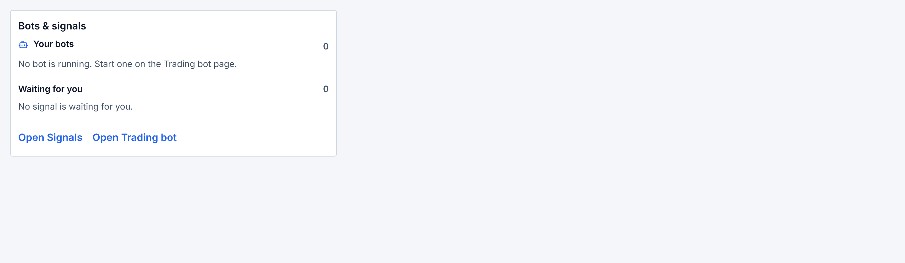 | 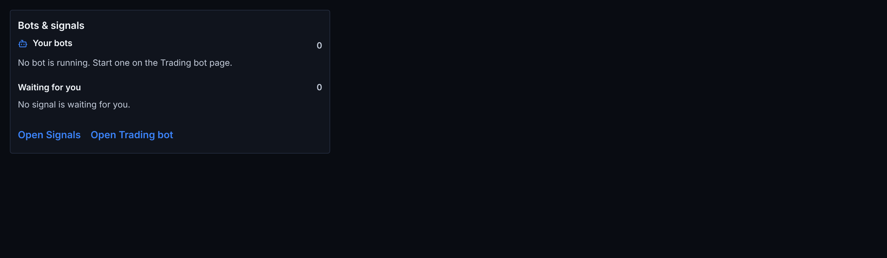 | 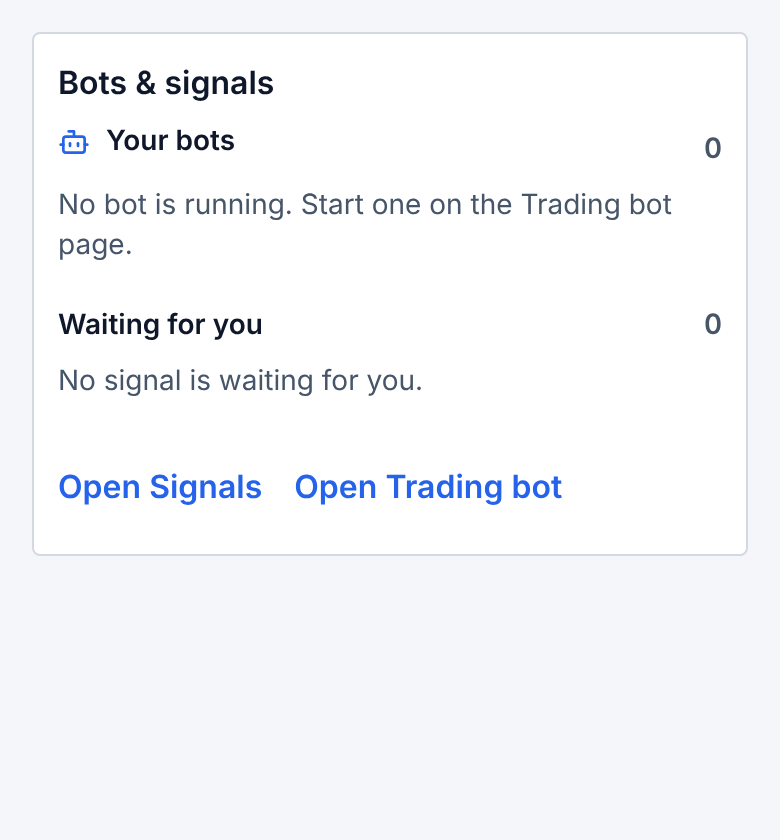 | 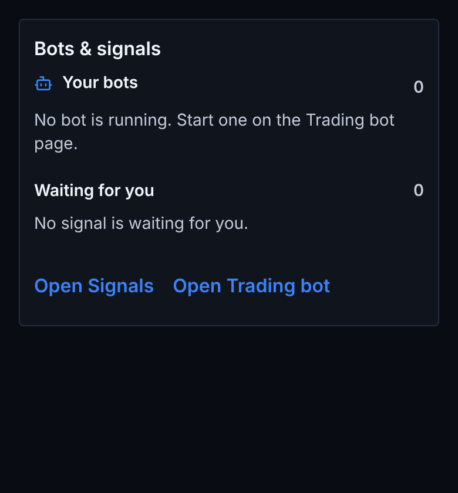 |
| running | 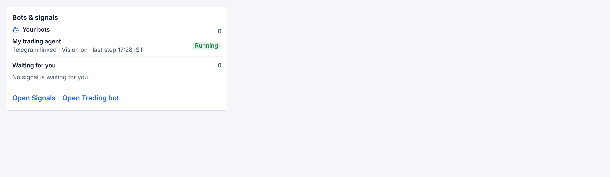 | 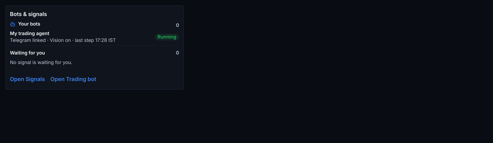 | 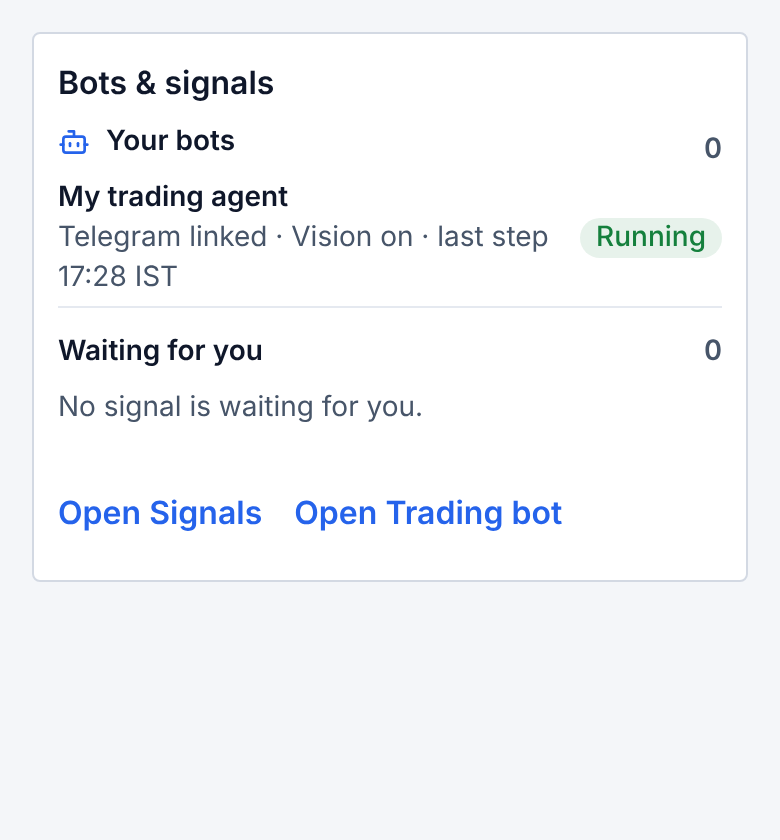 | 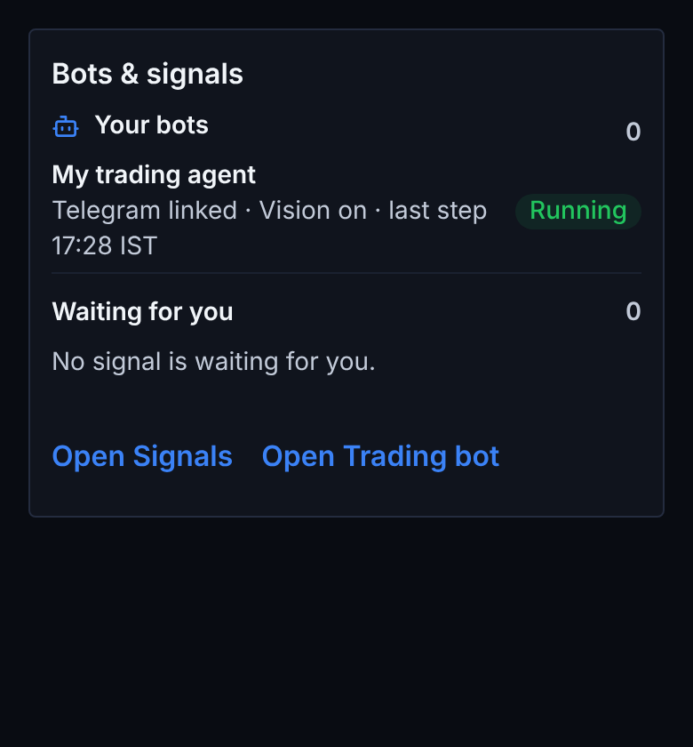 |
| problem | 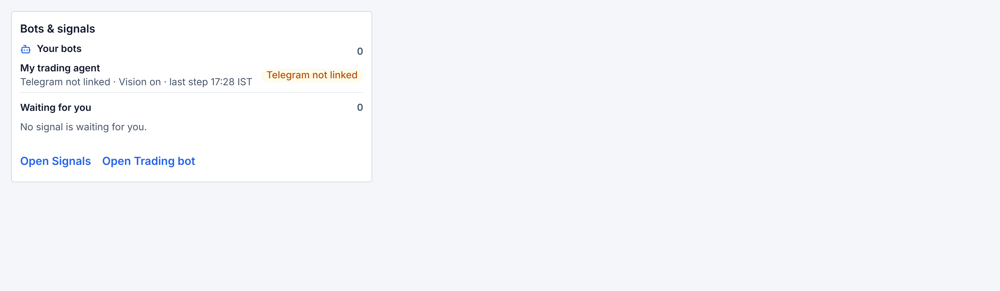 | 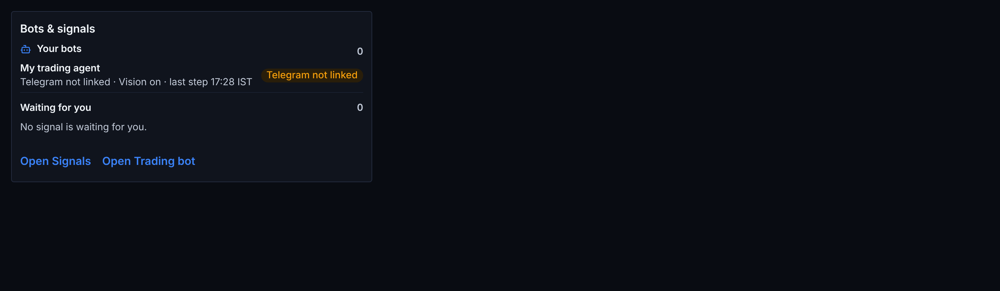 | 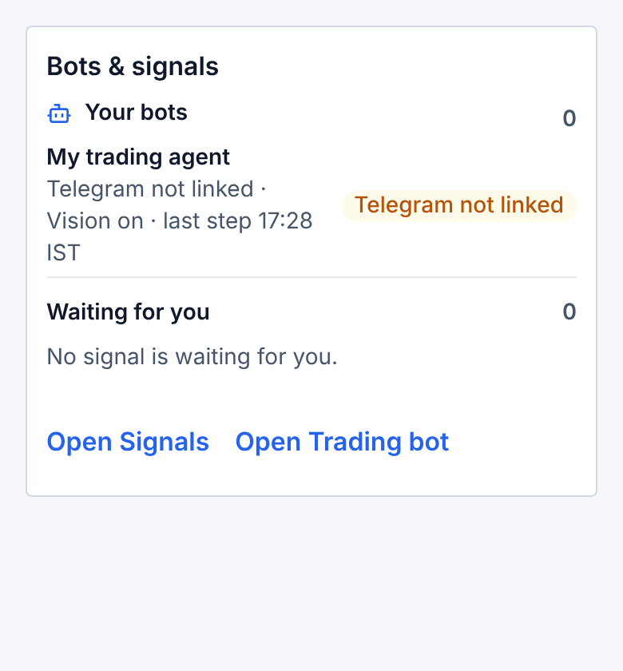 | 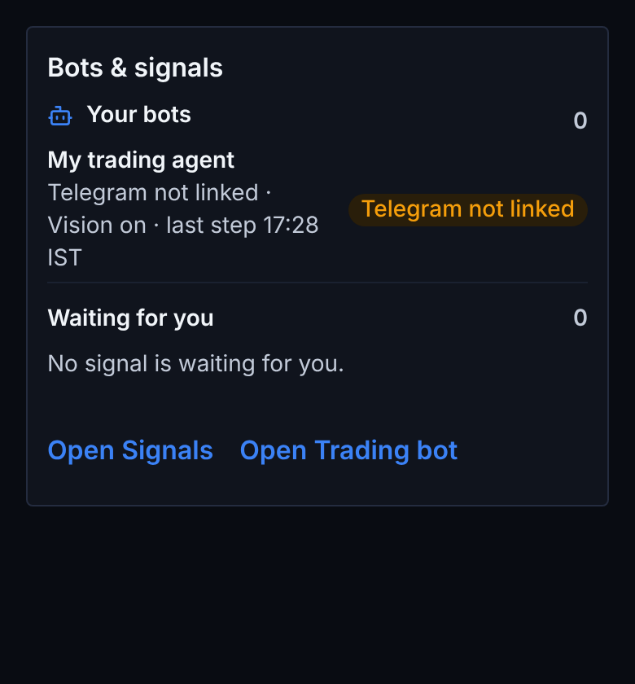 |